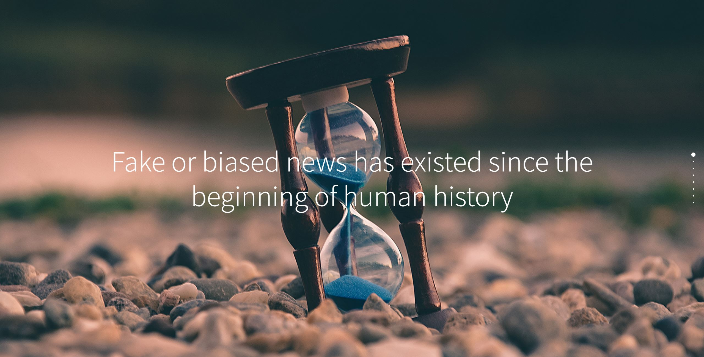

Spoting Fake News
Spotting Fake News was an interactive project designed to educate and inform people about the detrimental effects of fake news on the internet. There were slices that showed how the fake news had been spreading and the consequences of spreading biased news.
Prototype Link
The Prompt
The goal and purpose of this project was to design an interactive digital product that communicated something unique and specific related to the theme of "inclusiveness, respect, and reciprocity".
Findings from Research
The topic that I researched for this project was fake news and information on the internet, so I found some academic articles to search what effects and consequences would have relative to this topic. I discovered that in the digital age, information spread has been faster and on a wider scale than ever before. Because of the development of the internet, readers can get information easily; Furthermore, some people utilize computer programs and social media to spread misinformation to readers.
As an internet user, she/he is difficult to distinguish if the online information is reliable. Therefore, as readers, we might not have too much power to change the future of internet media, but we can be vigilant in increasing the credibility of various articles by verifying them.
I would like to bring this information to my website to tell how fake news affects people. I wish people would notice this issue more.
Lessons Learned
This project gave me a better understanding of the various ways that users can interact with a website. It made me explore different options on how to present information to users. Important questions to consider when creating an interactive project are, “what is the best way to enable the user to fully understand information”, and “What kind of experience do I want my target audience to have?” Overall, the main interaction features are fully implemented with JavaScript.